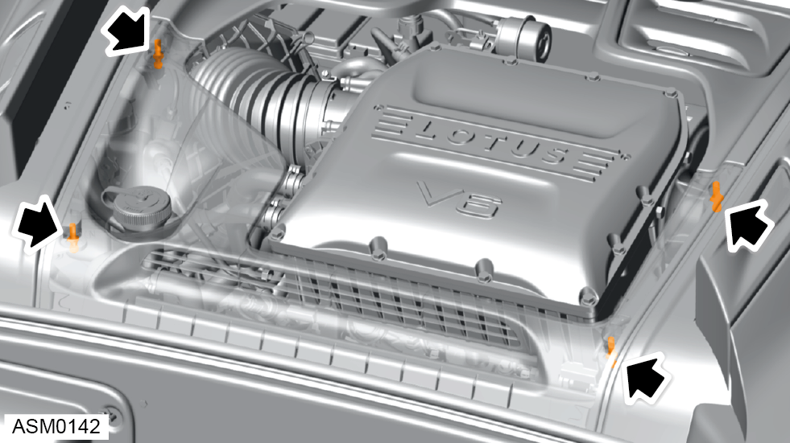
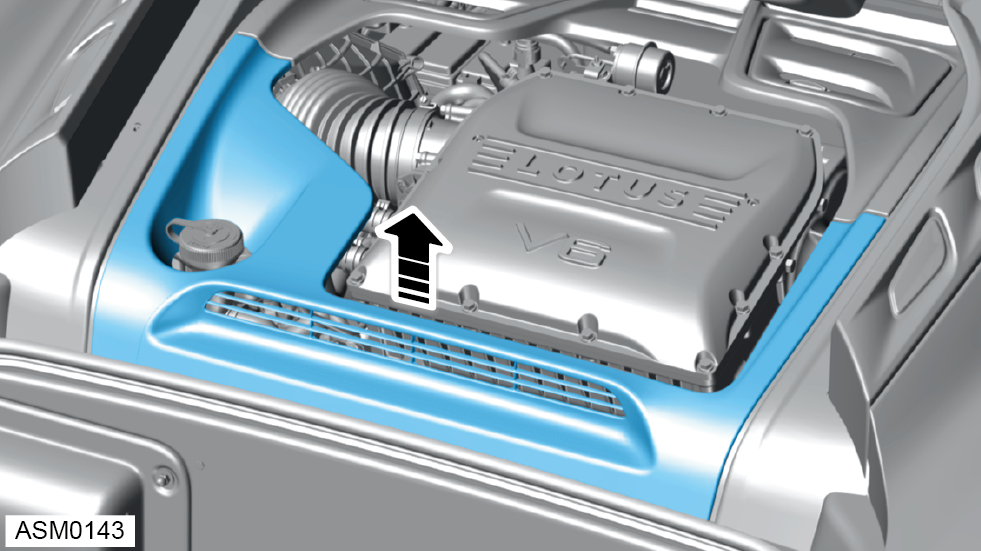
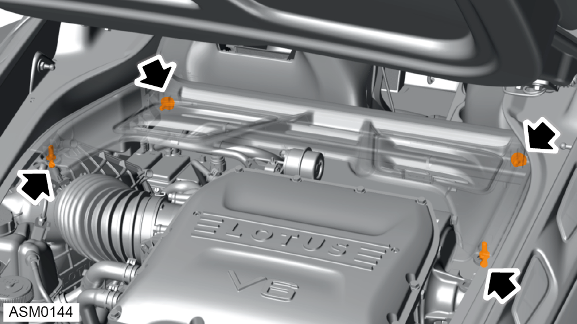
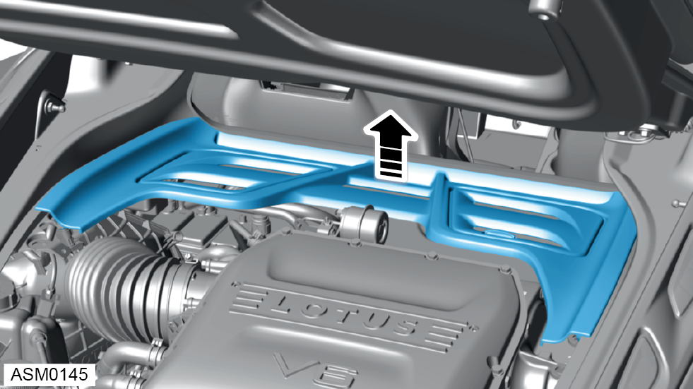
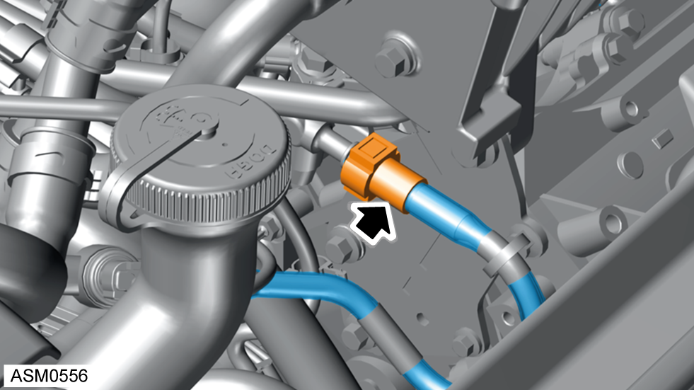

Removal




NOTE: Fuse no.29 located in rear fuse box.
NOTE: Refer to Lotus Insight tool for further information.

 WARNING: Be aware of the possibility of fuel pressure retention in the fuel line cause by a system fault.
WARNING: Be aware of the possibility of fuel pressure retention in the fuel line cause by a system fault.
 CAUTION: Do not bend or twist the nylon tube.
CAUTION: Do not bend or twist the nylon tube.
NOTE: Pinch the two buttons on the quick connector and pull to remove.
NOTE: Be prepared to catch any excess gasoline.
NOTE: Cover quick connector with a clean plastic bag to prevent ingress of dirt.